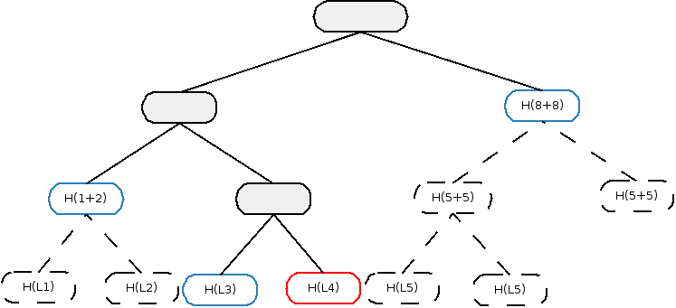

Transaction tear-offs¶
One of the basic data structures in our platform is a transaction. It can be passed around to be signed and verified, also by third parties. The construction of transactions assumes that they form a whole entity with input and output states, commands and attachments inside. However all sensitive data shouldn’t be revealed to other nodes that take part in the creation of transaction on validation level (a good example of this situation is the Oracle which validates only embedded commands). How to achieve it in a way that convinces the other party the data they got for signing really did form a part of the transaction?
We decided to use well known and described cryptographic scheme to provide proofs of inclusion and data integrity. Merkle trees are widely used in peer-to-peer networks, blockchain systems and git. You can read more on the concept here.
Merkle trees in Corda¶
Transactions are split into leaves, each of them contains either input, output, command or attachment. Additionally, in
transaction id calculation we use other fields of WireTransaction like timestamp, notary, type and signers.
Next, the Merkle tree is built in the normal way by hashing the concatenation of nodes’ hashes below the current one together.
It’s visible on the example image below, where H denotes sha256 function, “+” - concatenation.

The transaction has two input states, one of output, attachment and command each and timestamp. For brevity we didn’t include all leaves on the diagram (type, notary and signers are presented as one leaf labelled Rest - in reality they are separate leaves). Notice that if a tree is not a full binary tree, leaves are padded to the nearest power of 2 with zero hash (since finding a pre-image of sha256(x) == 0 is hard computational task) - marked light green above. Finally, the hash of the root is the identifier of the transaction, it’s also used for signing and verification of data integrity. Every change in transaction on a leaf level will change its identifier.
Hiding data¶
Hiding data and providing the proof that it formed a part of a transaction is done by constructing Partial Merkle Trees (or Merkle branches). A Merkle branch is a set of hashes, that given the leaves’ data, is used to calculate the root’s hash. Then that hash is compared with the hash of a whole transaction and if they match it means that data we obtained belongs to that particular transaction.
In the example above, the node H(f) is the one holding command data for signing by Oracle service. Blue leaf H(g) is also
included since it’s holding timestamp information. Nodes labelled Provided form the Partial Merkle Tree, black ones
are omitted. Having timestamp with the command that should be in a violet node place and branch we are able to calculate
root of this tree and compare it with original transaction identifier - we have a proof that this command and timestamp
belong to this transaction.
Example of usage¶
Let’s focus on a code example. We want to construct a transaction with commands containing interest rate fix data as in:
Writing oracle services.
After construction of a partial transaction, with included Fix commands in it, we want to send it to the Oracle for checking
and signing. To do so we need to specify which parts of the transaction are going to be revealed. That can be done by constructing
filtering function over fields of WireTransaction of type (Any) -> Boolean.
val partialTx = ...
val oracle: Party = ...
fun filtering(elem: Any): Boolean {
return when (elem) {
is Command -> oracleParty.owningKey in elem.signers && elem.value is Fix
else -> false
}
}
Assuming that we already assembled partialTx with some commands and know the identity of Oracle service,
we construct filtering function over commands - filtering. It performs type checking and filters only Fix commands
as in IRSDemo example. Then we can construct FilteredTransaction:
val wtx: WireTransaction = partialTx.toWireTransaction()
val ftx: FilteredTransaction = wtx.buildFilteredTransaction(filtering)
In the Oracle example this step takes place in RatesFixFlow by overriding filtering function, see: Using an oracle
FilteredTransaction holds filteredLeaves (data that we wanted to reveal) and Merkle branch for them.
// Direct accsess to included commands, inputs, outputs, attachments etc.
val cmds: List<Command> = ftx.filteredLeaves.commands
val ins: List<StateRef> = ftx.filteredLeaves.inputs
val timestamp: Timestamp? = ftx.filteredLeaves.timestamp
...
fun sign(ftx: FilteredTransaction): DigitalSignature.LegallyIdentifiable {
if (!ftx.verify()) {
throw MerkleTreeException("Rate Fix Oracle: Couldn't verify partial Merkle tree.")
}
// Performing validation of obtained FilteredLeaves.
fun commandValidator(elem: Command): Boolean {
if (!(identity.owningKey in elem.signers && elem.value is Fix))
throw IllegalArgumentException("Oracle received unknown command (not in signers or not Fix).")
val fix = elem.value as Fix
val known = knownFixes[fix.of]
if (known == null || known != fix)
throw UnknownFix(fix.of)
return true
}
fun check(elem: Any): Boolean {
return when (elem) {
is Command -> commandValidator(elem)
else -> throw IllegalArgumentException("Oracle received data of different type than expected.")
}
}
val leaves = ftx.filteredLeaves
if (!leaves.checkWithFun(::check))
throw IllegalArgumentException()
// It all checks out, so we can return a signature.
//
// Note that we will happily sign an invalid transaction, as we are only being presented with a filtered
// version so we can't resolve or check it ourselves. However, that doesn't matter much, as if we sign
// an invalid transaction the signature is worthless.
return signingKey.signWithECDSA(ftx.rootHash.bytes, identity)
}
Above code snippet is taken from NodeInterestRates.kt file and implements a signing part of an Oracle.
You can check only leaves using leaves.checkWithFun { check(it) } and then verify obtained FilteredTransaction
to see if data from PartialMerkleTree belongs to WireTransaction with provided id. All you need is the root hash
of the full transaction:
if (!ftx.verify(merkleRoot)){
throw MerkleTreeException("Rate Fix Oracle: Couldn't verify partial Merkle tree.")
}
Or combine the two steps together:
ftx.verifyWithFunction(merkleRoot, ::check)
Note
The way the FilteredTransaction is constructed ensures that after signing of the root hash it’s impossible to add or remove
leaves. However, it can happen that having transaction with multiple commands one party reveals only subset of them to the Oracle.
As signing is done now over the Merkle root hash, the service signs all commands of given type, even though it didn’t see
all of them. This issue will be handled after implementing partial signatures.